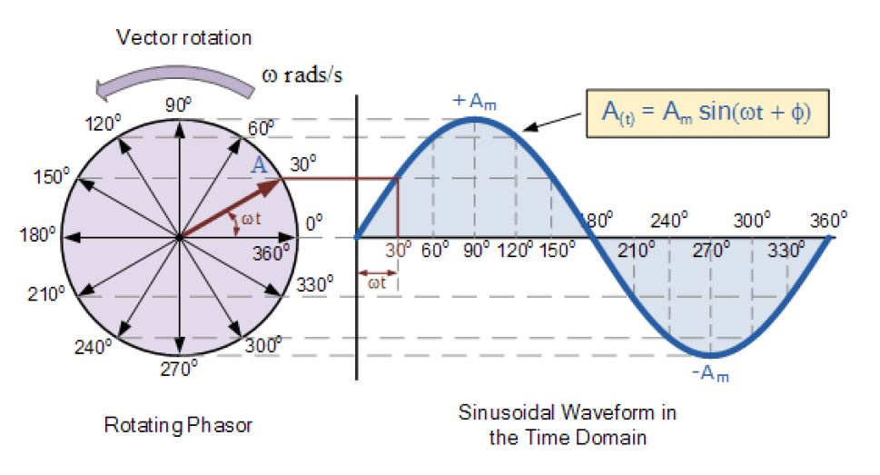

…then why did you vote me?
bless you
1 Like
that was before you came on
i guessed correctly that you weren’t vet so hooray me
but you came on and I felt that you were still being very adamant on being the vet
vote was cast as such
It’s been seriously all over the place. I think he’s probably V and his wolfyness has been TWTBAW.
May I ask what the hecc sinusodial means
I was talking about how neither of Marshal nor I should be lynched. What did you interpret from those posts?
it was a joke
because I do not have any fucking clue what that word means
1 Like
Vote Count
| Voted | Voters | Votes |
|---|---|---|
| Marshal | Fossil | 1/10 |
| N.1 | Twil1ight | 1/10 |
| Alice | Marshal | 1/10 |
| Sogman | ModeShifter | 1/10 |
| clonedcheese | Alice | 1/10 |
| Currently abstaining Players | N.1, Italy, oB_L1ght, an_gorta_pratai, PokemonKidRyan, Universal, Magnus, katze, CRichard564, SogMan, EVO, TheBlueElixir, Wazza, clonedcheese | 14 |
Yell at me if there are any mistakes.
Jgoes said I could do VCs
1 Like
I think it means wishy washy tbh
I unvoted
si·nus·oi·dal
/ˌsīnəˈsoidl/
adjective
having the form of a sine curve.
this did not help

Okay look y’all I’m sorry but I’m going to do the most towny move today.
/vote Wazza
But it’s a serious vote.
honestly this slot can die
/vote N.1
learn math nerd
the hell did i do
first of all
i don’t see why im being scumread?
and if i can’t see it
maybe others can’t see it as well
i unvoted too
I believe if we have no leads I should be lynched today:
(And I cant be Jester as it doesn’t exist nerds)
I’m fearful that CL will just use me and wipe out 2 town instantly
where, I just checked
what the fuck
alice no
if I have to see any more math I think i might go sinusoidal
1 Like
or just no action